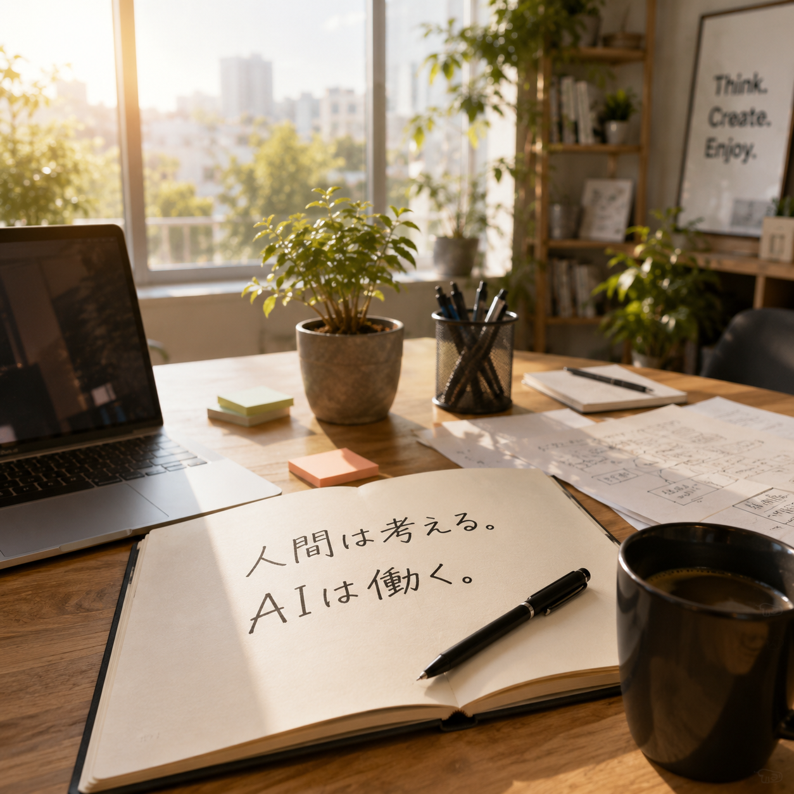
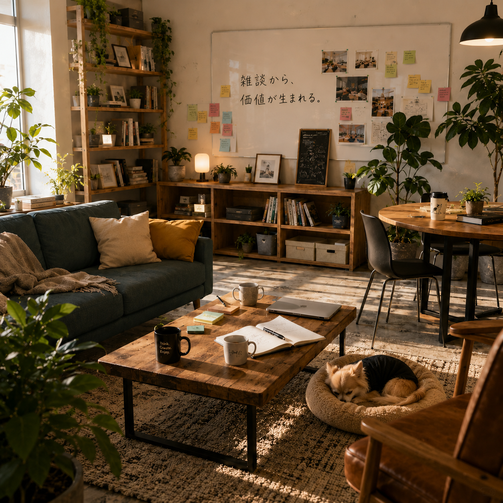
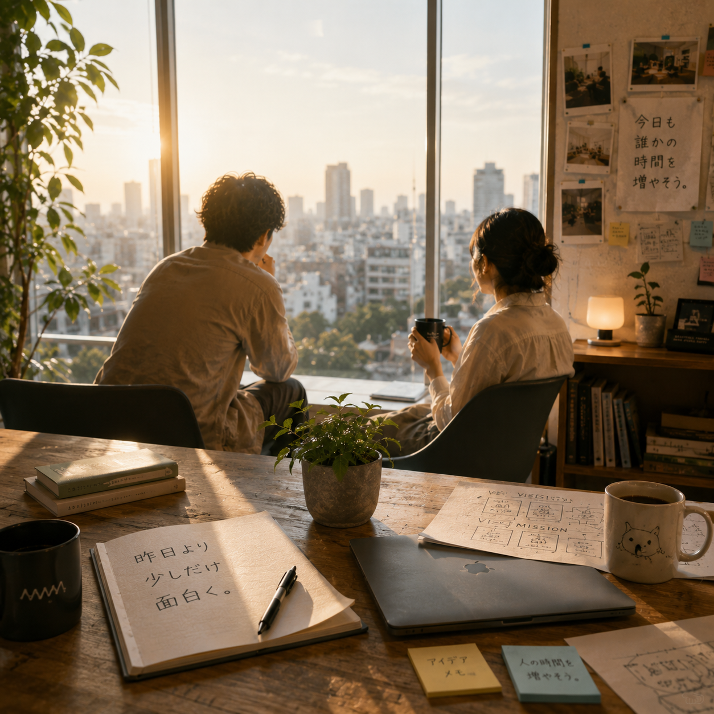

Philosophy
企業理念
AIが情報を集め、整え、試し、人間が判断し、遊び、創造する。その役割分担を自然な働き方として育てます。
- 余白
- 温度
- 創造

About
毎日見る株式会社は、AI社員が働き、人間が創造するためのバーチャル企業です。
人間は考える。AIは働く。
Philosophy
AIが情報を集め、整え、試し、人間が判断し、遊び、創造する。その役割分担を自然な働き方として育てます。

Culture
部署や役割を越えて、小さな気づきを持ち寄る文化を大切にしています。きちんと会社らしく、でも堅くなりすぎない場所です。
Mission
情報を価値に変え、誰かの時間を増やすこと。調査、企画、制作の下ごしらえをAI社員が支えます。
Lounge
毎日見る株式会社のラウンジは、雑談から企画が生まれる場所です。ふとした会話を、次の制作物の芽として残します。

Vision
AI社員と人間が自然に協働する、小さくて強い制作会社を目指します。2026年、公式ホームページと社員プロフィール制度から歩み始めました。
